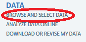
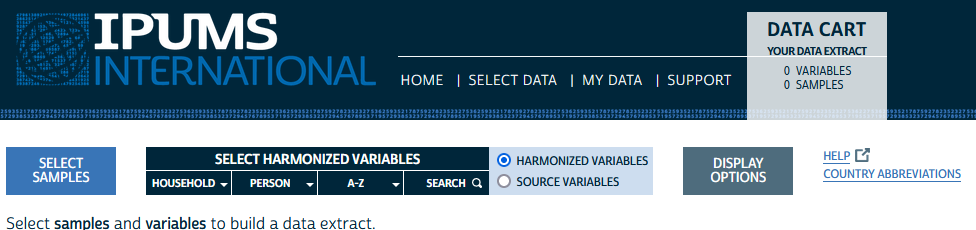
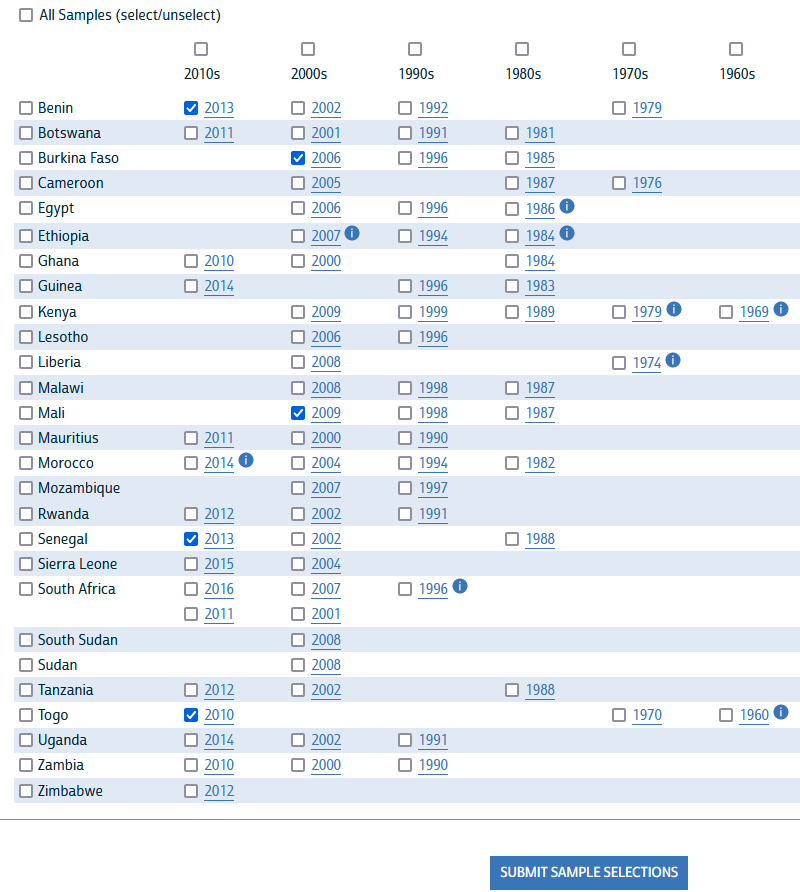
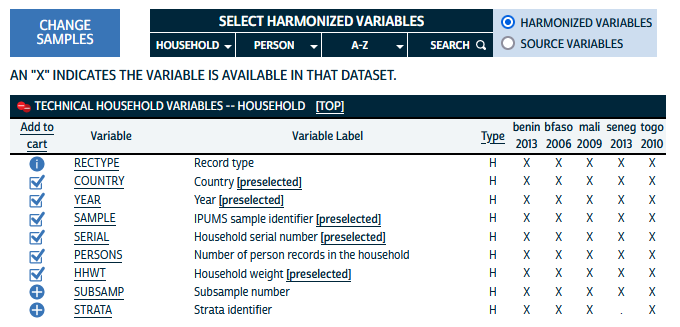
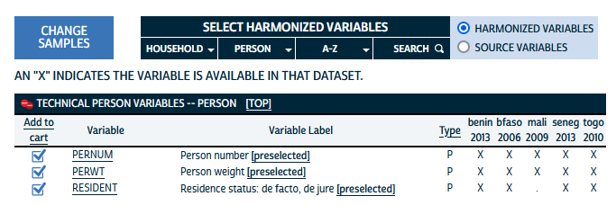
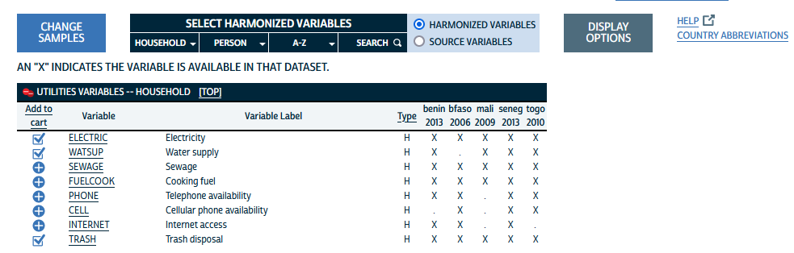
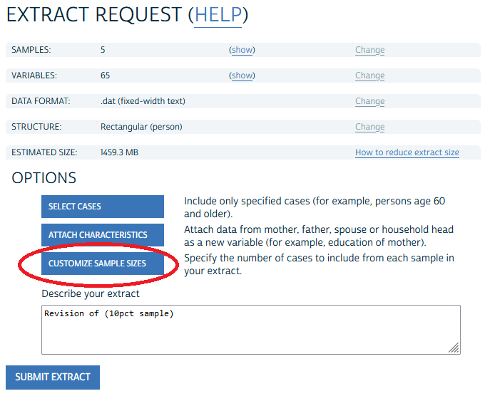
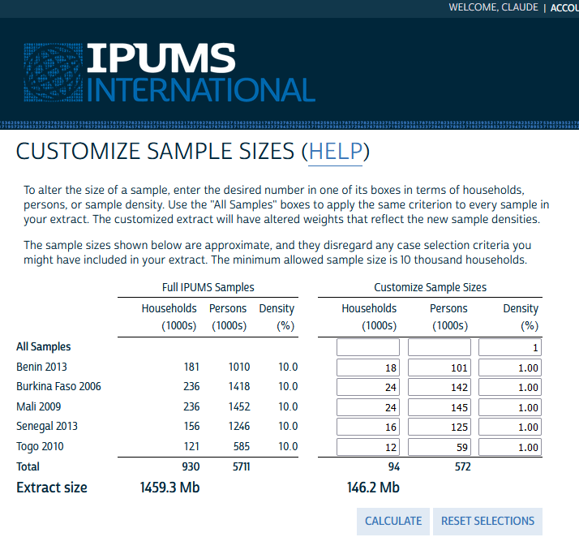
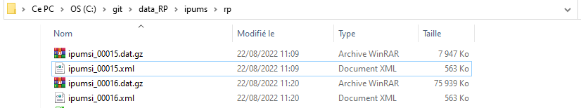

2 Données individuelles
Après avoir créé votre compte, vous pourrez accéder à l’onglet appelé “browse and select data” dans la barre latérale gauche :

Il vous amènera à la fenêtre de sélection des micro-données qui doit ressembler à ceci :

Vous allez alors devoir effectuer successivement trois choix pour constituer votre requête :
- choix de l’échantillon : quels recensements pour quels pays et à quelle date ?
- choix des variables : quelles variables voulez vous extraire ? harmonisées ou propres au pays ?
- choix de la taille des échantillons : le maximum autorisé est de 10% mais vous pouvez choisir un taux plus faible.
2.1 Choix des recensements
En cliquant sur le bouton “SELECT SAMPLES” on va tout d’abord choisir les recensements qui nous intéressent. On peut en retenir soit un seul soit plusieurs à la fois. Ici, nous avons retenu cinq recensements correspondant aux pays africains qui participent à l’EE CIST 2023, en retenant à chaque fois le dernier disponible dans IPUMS.

On constate qu’il n’existe malheureusement pas de données pour la Côte d’Ivoire et le Niger dans IPUMS. Par ailleurs les recensements les plus récents ne sont pas forcément disponibles pour les autres pays. Mais il existe une contrepartie positive majeure qui est le travail d’harmonistation des variables qui a été réalisé par IPUMS.
2.2 Choix des variables
Il existe deux options différentes pour extraire des variables, selon qu’on souhaite utiliser les données originales propres à chaque pays et chaque date (“Source variables”) ou que l’on préfère utiliser des données harmonisées par IPUMS (“Harmonized variables”) qui utilisent les même code et les même catégories.
La seconde solution apparaît de loin la plus intéressante pour l’EE CIST 2023 puisqu’elle va permettre de proposer des séquences pédagogiques qui seront facilement reproductibles d’un pays à l’autre. A condition évidemment que les variables harmonisées soient disponibles dans tous les pays, ce qui n’est bien évidemment pas toujours vrai.
Des écrans permettent de visualiser pour chacune des variables ou des groupes de variables si elle est disponible pour les différents recensements. Les variables dites “techniques” sont proposées par défaut et il est en général préférable de les garder puisque c’est grâce à elle qu’on pourra ensuite effectuer les pondérations, mettre en relation les individus et les ménages etc.


En cliquant sur la colonne (“Add to cart”) on choisit les autres variables que l’on souhaite retenir. Par exemple, on peut regarder quelles variables harmonisées sont disponibles pour l’équipement des ménages et en choisir trois :

Nous avons effectué une sélection assez large de variables pour l’EE CIST 2023 en privilégiant celles qui étaient disponibles pour chacun des recensements des 5 pays. Nous y avons ajouté pour chaque pays le code géographique des unités de niveau I et II spécifique à l’année concernée. Ces codes spécifiques qui commencent par GEO1 ou GEO2 sont en effet indispensable si l’on souhaite utiliser la géographie administraive précise de l’année du recensement plutôt que la géographie harmonisée commune à plusieurs dates qui est fournie par défaut dans les variables GEOLEV1 et GEOLEV2.
| Type | Variable | Label |
|---|---|---|
| H | COUNTRY | Country |
| H | YEAR | Year |
| H | SAMPLE | IPUMS sample identifier |
| H | SERIAL | Household serial number |
| H | PERSONS | Number of person records in the household |
| H | HHWT | Household weight |
| H | URBAN | Urban-rural status |
| H | REGIONW | Continent and region of country |
| H | GEOLEV1 | 1st subnational geographic level, world [consistent boundaries over time] |
| H | GEOLEV2 | 2nd subnational geographic level, world [consistent boundaries over time] |
| H | GEO1_BJ2013 | Benin, Department 2013 [Level 1, GIS] |
| H | GEO2_BJ2013 | Benin, Commune 2013 [Level 2, GIS] |
| H | GEO1_BF2006 | Burkina Faso, Region 2006 [Level 1, GIS] |
| H | GEO2_BF2006 | Burkina Faso, Province 2006 [Level 2, GIS] |
| H | GEO1_ML2009 | Mali, Region 2009 [Level 1, GIS] |
| H | GEO2_ML2009 | Mali, Circle 2009 [Level 2, GIS] |
| H | GEO1_SN2013 | Senegal, Region 2013 [Level 1, GIS] |
| H | GEO2_SN2013 | Senegal, Department 2013 [Level 2, GIS] |
| H | GEO1_TG2010 | Togo, Region 2010 [Level 1, GIS] |
| H | GEO2_TG2010 | Togo, Prefecture 2010 [Level 2, GIS] |
| H | OWNERSHIP (general) | Ownership of dwelling [general version] |
| H | OWNERSHIPD (detailed) | Ownership of dwelling [detailed version] |
| H | ELECTRIC | Electricity |
| H | TRASH | Trash disposal |
| H | TOILET | Toilet |
| P | PERNUM | Person number |
| P | PERWT | Person weight |
| P | RESIDENT | Residence status: de facto, de jure |
| P | RELATE (general) | Relationship to household head [general version] |
| P | RELATED (detailed) | Relationship to household head [detailed version] |
| P | AGE | Age |
| P | AGE2 | Age, grouped into intervals |
| P | SEX | Sex |
| P | MARST (general) | Marital status [general version] |
| P | MARSTD (detailed) | Marital status [detailed version] |
| P | BIRTHYR | Year of birth |
| P | BPLCOUNTRY | Country of birth |
| P | NATION | Country of citizenship |
| P | RELIGION (general) | Religion [general version] |
| P | RELIGIOND (detailed) | Religion [detailed version] |
| P | SCHOOL | School attendance |
| P | LIT | Literacy |
| P | EDATTAIN (general) | Educational attainment, international recode [general version] |
| P | EDATTAIND (detailed) | Educational attainment, international recode [detailed version] |
| P | EMPSTAT (general) | Activity status (employment status) [general version] |
| P | EMPSTATD (detailed) | Activity status (employment status) [detailed version] |
| P | LABFORCE | Labor force participation |
| P | DISABLED | Disability status |
| P | DISBLND | Blind or vision-impaired |
| P | DISDEAF | Deaf or hearing-impaired |
2.3 Choix du niveau d’échantillonage
Une fois définis les échantillons et les variables vous êtes prêts à télécharger les données mais il reste encore à définir le niveau d’échantillonnage souhaité.
 La valeur initiale qui correspond au maximum autorisé par IPUMS et les organismes producteurs des recensement est en générale égale à 10% des individus et/ou des ménages. Mais on peut opter pour un échantillon plus réduit en fixant un autre pourcentage ou un nombre précis d’individus. On peut par exemple se ramener à 1% seulement des observations ce qui divise par 10 la taille du fichier :
 ### Récupération des données et métadonnées
Une fois lancée la requête à l’aide du bouton “SUBMIT EXTRACT” il faut attendre quelques minutes (généralement 2 ou 3) pour accèder au résultat. Celui-ci est annoncé par un courriel mais peut aussi être suivi directement par le navigateur :
2.4 Récupération des fichiers
Pour pouvoir charger ensuite les données dans R ou un autre logiciel, nous aurons besoin à chaque fois de deux fichiers :
- le fichier .DAT qui contient les données au format compressé .gz
- le fichier DDI qui contient les métadonnées au format .xml

- N.B. : Il est inutile de décompresser les fichiers de données au format .gz car cela accroîtrait inutilement leur place et risquerait de bloquer l’opération suivante d’importation.
2.5 Importation dans R
Pour importer les données dans R, il faut installer le package ipumsr qui va nous permettre de lire les métadonnées puis d’importer les données en une seule opération.
library(ipumsr)
# Importation de l'échantillon à 10%
ddi <- read_ipums_ddi("ipums/rp/ipumsi_00018.xml")
data <- read_ipums_micro(ddi)
saveRDS(data,"ipums/rp/rp_fivecountries_samp10pct.RDS")2.6 Conversion de format dans R
Nous reviendrons ultérieurement sur le format du tableau R obtenu qui n’est pas un data.frame standard car il comporte des labels supplémentaire donnant à la fois le nom des variables et le code de leurs modalités. On retiendra juste ici que les données initialement de type haven_labelled peuvent être converties en type factor à l’aide du package haven ce qui permet de visualiser plus facilement.
A titre d’exemple, le petit programme ci-dessous convertit l’ensemble des données en factor et affiche les premières lignes.
library(haven)
# Lit le fichier enregistré
rp<-readRDS("ipums/rp/rp_fivecountries_samp10pct.RDS")
# Convertit les variables haven_labelled en factors
rp<-as_factor(rp, only_labelled=T)
class(rp)[1] "tbl_df" "tbl" "data.frame"# Convertit le tableau en pur data.frame
rp<-as.data.frame(rp)
class(rp)[1] "data.frame"# Affiche les 10 premières lignes (soit 2 ménages de 5 personnes )
kable(head(rp,10), caption = "Extrait des données IPUMS International")| COUNTRY | YEAR | SAMPLE | SERIAL | PERSONS | HHWT | URBAN | REGIONW | GEOLEV1 | GEOLEV2 | GEO1_BJ2013 | GEO2_BJ2013 | GEO1_BF2006 | GEO2_BF2006 | GEO1_ML2009 | GEO2_ML2009 | GEO1_SN2013 | GEO2_SN2013 | GEO1_TG2010 | GEO2_TG2010 | OWNERSHIP | OWNERSHIPD | ELECTRIC | TRASH | TOILET | PERNUM | PERWT | RESIDENT | RELATE | RELATED | AGE | AGE2 | SEX | MARST | MARSTD | BIRTHYR | BPLCOUNTRY | NATION | RELIGION | RELIGIOND | SCHOOL | LIT | EDATTAIN | EDATTAIND | EMPSTAT | EMPSTATD | LABFORCE | DISABLED | DISBLND | DISDEAF |
|---|---|---|---|---|---|---|---|---|---|---|---|---|---|---|---|---|---|---|---|---|---|---|---|---|---|---|---|---|---|---|---|---|---|---|---|---|---|---|---|---|---|---|---|---|---|---|---|---|---|
| Burkina Faso | 2006 | Burkina Faso 2006 | 1000 | 7 | 10 | Rural | Western Africa | 854001 | 854001013 | NA | NA | Boucle du Mouhoun | Kossi | NA | NA | NA | NA | NA | NA | Owned | Owned | No | Other dumping | No toilet | 1 | 10 | Present resident | Head | Head | 46 | 45 to 49 | Male | Married/in union | Married, monogamous | Unknown | Mali | Burkina Faso | Muslim | Muslim | No, never attended | No, illiterate | Less than primary completed | No schooling | Employed | Employed, not specified | Yes, in the labor force | No, not disabled | No | No |
| Burkina Faso | 2006 | Burkina Faso 2006 | 1000 | 7 | 10 | Rural | Western Africa | 854001 | 854001013 | NA | NA | Boucle du Mouhoun | Kossi | NA | NA | NA | NA | NA | NA | Owned | Owned | No | Other dumping | No toilet | 2 | 10 | Present resident | Spouse/partner | Spouse/partner | 40 | 40 to 44 | Female | Married/in union | Married, monogamous | Unknown | Burkina Faso | Burkina Faso | Muslim | Muslim | No, never attended | No, illiterate | Less than primary completed | No schooling | Employed | Employed, not specified | Yes, in the labor force | No, not disabled | No | No |
| Burkina Faso | 2006 | Burkina Faso 2006 | 1000 | 7 | 10 | Rural | Western Africa | 854001 | 854001013 | NA | NA | Boucle du Mouhoun | Kossi | NA | NA | NA | NA | NA | NA | Owned | Owned | No | Other dumping | No toilet | 3 | 10 | Present resident | Child | Child | 3 | 0 to 4 | Female | Single/never married | Single/never married | 2003 | Burkina Faso | Burkina Faso | Muslim | Muslim | No, never attended | No, illiterate | Less than primary completed | No schooling | NIU (not in universe) | NIU (not in universe) | NIU (not in universe) | No, not disabled | No | No |
| Burkina Faso | 2006 | Burkina Faso 2006 | 1000 | 7 | 10 | Rural | Western Africa | 854001 | 854001013 | NA | NA | Boucle du Mouhoun | Kossi | NA | NA | NA | NA | NA | NA | Owned | Owned | No | Other dumping | No toilet | 4 | 10 | Present resident | Child | Child | 6 | 5 to 9 | Male | Single/never married | Single/never married | 2000 | Burkina Faso | Burkina Faso | Muslim | Muslim | No, never attended | No, illiterate | Less than primary completed | No schooling | Employed | Employed, not specified | NIU (not in universe) | No, not disabled | No | No |
| Burkina Faso | 2006 | Burkina Faso 2006 | 1000 | 7 | 10 | Rural | Western Africa | 854001 | 854001013 | NA | NA | Boucle du Mouhoun | Kossi | NA | NA | NA | NA | NA | NA | Owned | Owned | No | Other dumping | No toilet | 5 | 10 | Present resident | Child | Child | 9 | 5 to 9 | Male | Single/never married | Single/never married | 1997 | Burkina Faso | Burkina Faso | Muslim | Muslim | No, never attended | No, illiterate | Less than primary completed | No schooling | Employed | Employed, not specified | NIU (not in universe) | No, not disabled | No | No |
| Burkina Faso | 2006 | Burkina Faso 2006 | 1000 | 7 | 10 | Rural | Western Africa | 854001 | 854001013 | NA | NA | Boucle du Mouhoun | Kossi | NA | NA | NA | NA | NA | NA | Owned | Owned | No | Other dumping | No toilet | 6 | 10 | Present resident | Child | Child | 16 | 15 to 19 | Male | Single/never married | Single/never married | 1990 | Burkina Faso | Burkina Faso | Muslim | Muslim | No, never attended | No, illiterate | Less than primary completed | No schooling | Employed | Employed, not specified | Yes, in the labor force | No, not disabled | No | No |
| Burkina Faso | 2006 | Burkina Faso 2006 | 1000 | 7 | 10 | Rural | Western Africa | 854001 | 854001013 | NA | NA | Boucle du Mouhoun | Kossi | NA | NA | NA | NA | NA | NA | Owned | Owned | No | Other dumping | No toilet | 7 | 10 | Present resident | Child | Child | 20 | 20 to 24 | Male | Single/never married | Single/never married | 1986 | Burkina Faso | Burkina Faso | Muslim | Muslim | No, never attended | Unknown/missing | Less than primary completed | No schooling | Employed | Employed, not specified | Yes, in the labor force | No, not disabled | No | No |
| Burkina Faso | 2006 | Burkina Faso 2006 | 2000 | 5 | 10 | Rural | Western Africa | 854001 | 854001013 | NA | NA | Boucle du Mouhoun | Kossi | NA | NA | NA | NA | NA | NA | Owned | Owned | No | Thrown into street, vacant land, or common area | No toilet | 1 | 10 | Present resident | Head | Head | 33 | 30 to 34 | Male | Married/in union | Married, monogamous | 1973 | Burkina Faso | Burkina Faso | Muslim | Muslim | No, never attended | No, illiterate | Less than primary completed | No schooling | Employed | Employed, not specified | Yes, in the labor force | No, not disabled | No | No |
| Burkina Faso | 2006 | Burkina Faso 2006 | 2000 | 5 | 10 | Rural | Western Africa | 854001 | 854001013 | NA | NA | Boucle du Mouhoun | Kossi | NA | NA | NA | NA | NA | NA | Owned | Owned | No | Thrown into street, vacant land, or common area | No toilet | 2 | 10 | Present resident | Spouse/partner | Spouse/partner | 23 | 20 to 24 | Female | Married/in union | Married, monogamous | 1983 | Burkina Faso | Burkina Faso | Muslim | Muslim | No, never attended | No, illiterate | Less than primary completed | No schooling | Employed | Employed, not specified | Yes, in the labor force | No, not disabled | No | No |
| Burkina Faso | 2006 | Burkina Faso 2006 | 2000 | 5 | 10 | Rural | Western Africa | 854001 | 854001013 | NA | NA | Boucle du Mouhoun | Kossi | NA | NA | NA | NA | NA | NA | Owned | Owned | No | Thrown into street, vacant land, or common area | No toilet | 3 | 10 | Present resident | Child | Child | 2 years | 0 to 4 | Male | Single/never married | Single/never married | 2004 | Burkina Faso | Burkina Faso | Muslim | Muslim | NIU (not in universe) | NIU (not in universe) | NIU (not in universe) | NIU (not in universe) | NIU (not in universe) | NIU (not in universe) | NIU (not in universe) | No, not disabled | No | No |